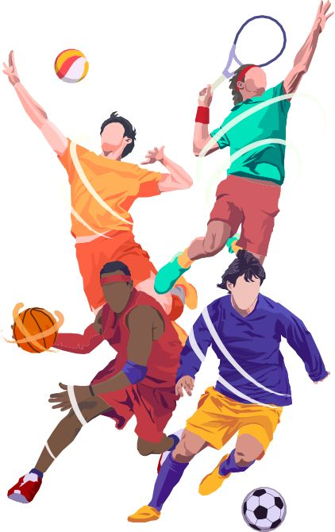

mision
Como todo proyecto debe de tener una mision y ese sera consientizar de que muchas veces no hacemos lo que a uno nos gusta por quedar bien con un grupo, yo en mi caso fue mis amigos que no jugaban futbol y me decian que si los iba a abandonar y cosas asi. Entoneces para mi este proyecto tambien significo conocerme de no volver a dejar qyue me manipulen asi.
Ademas de obvio al ser un deporte es muy bueno para la salud y siempre se recomienda practicar uno para vivir sanamente y mejorar tus habilidades sociales.
